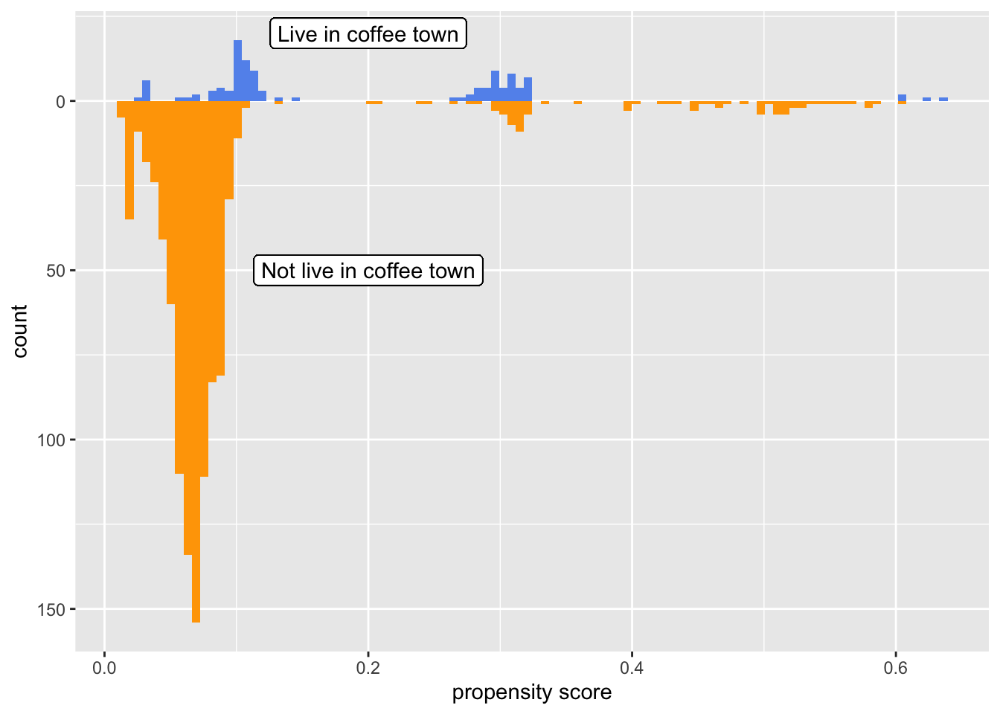
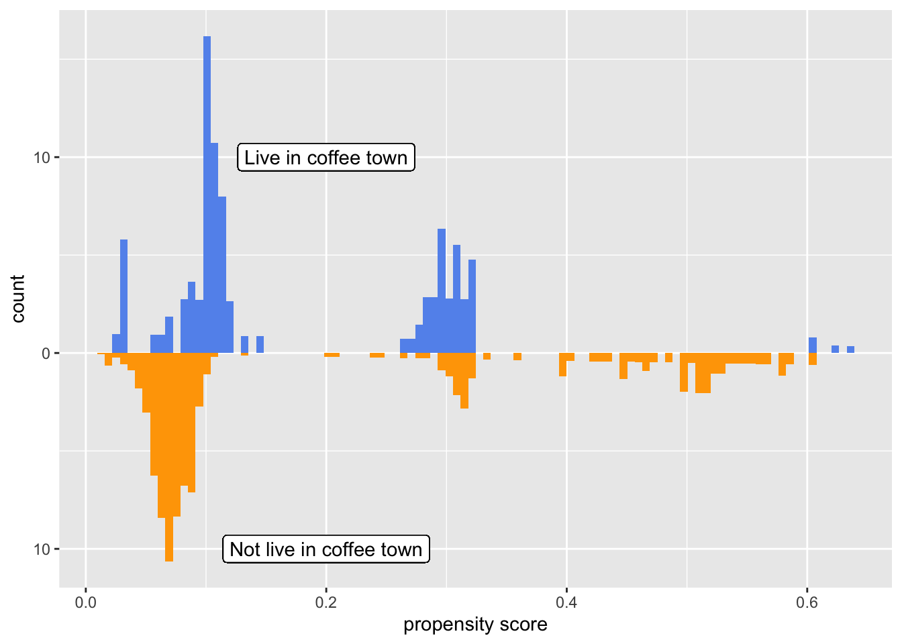
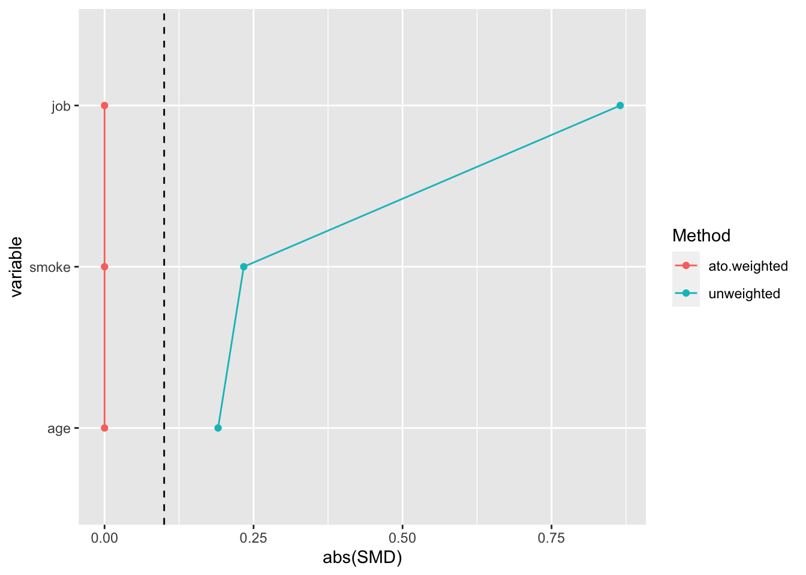
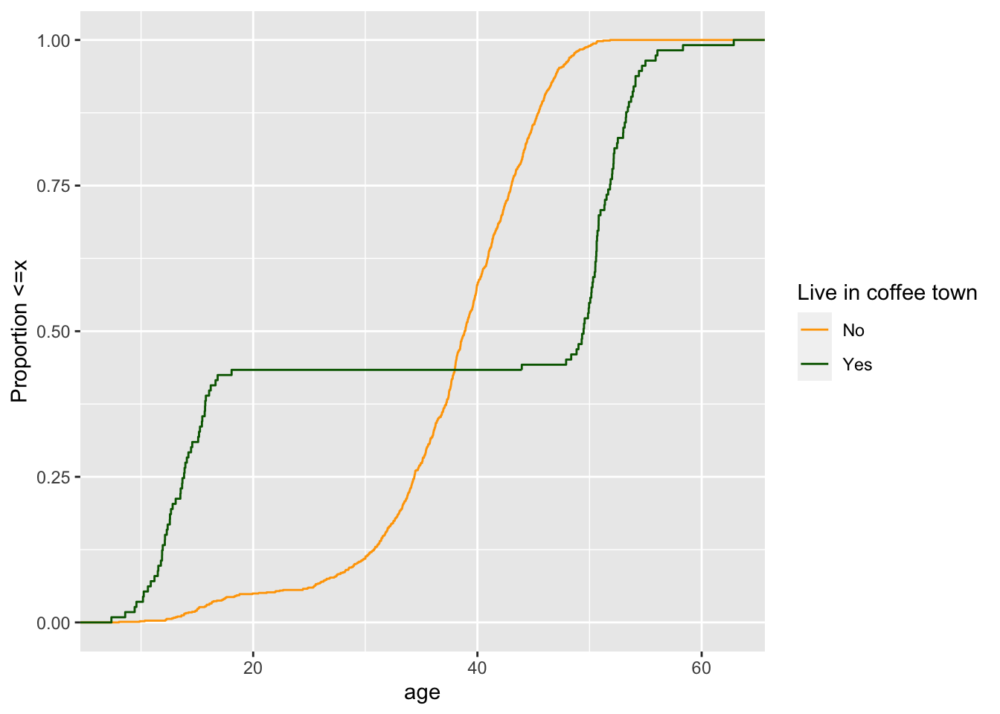
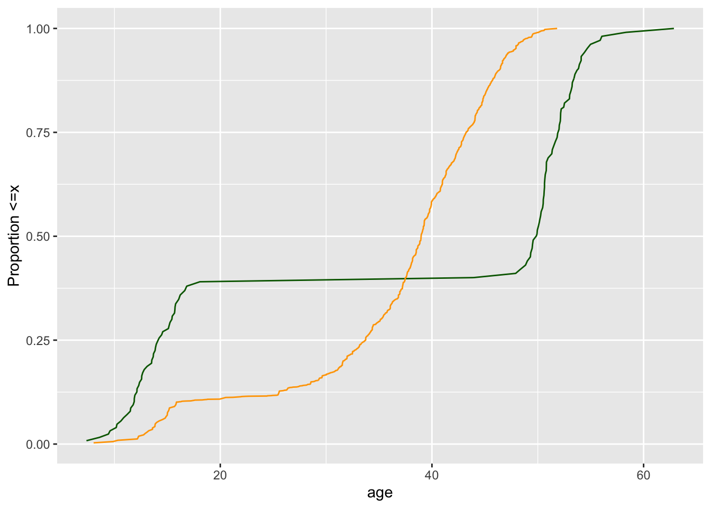
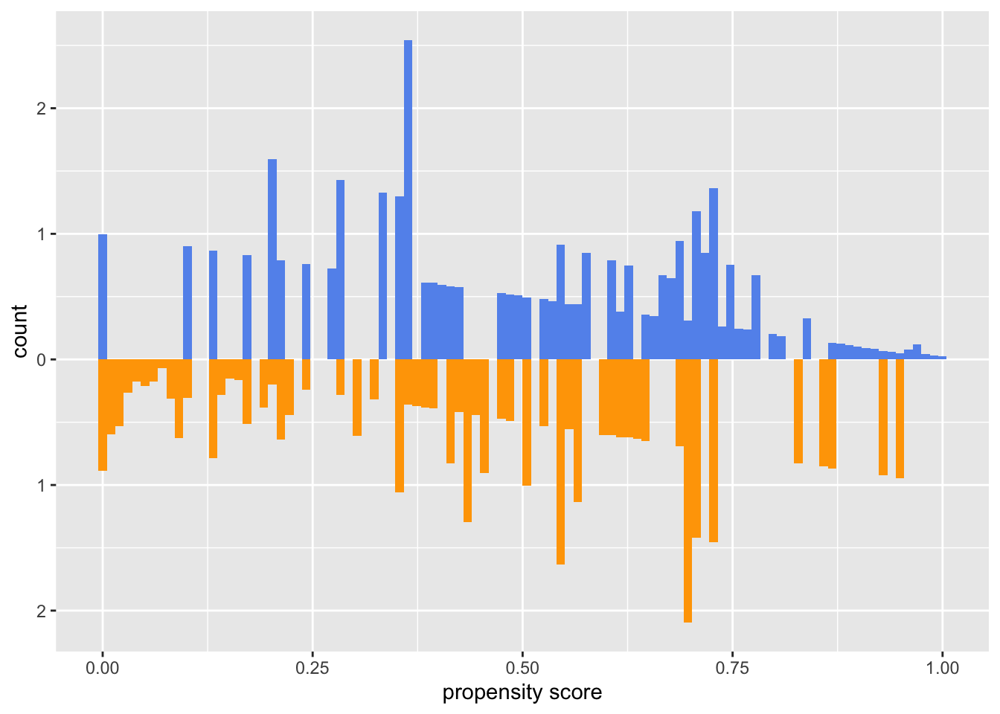
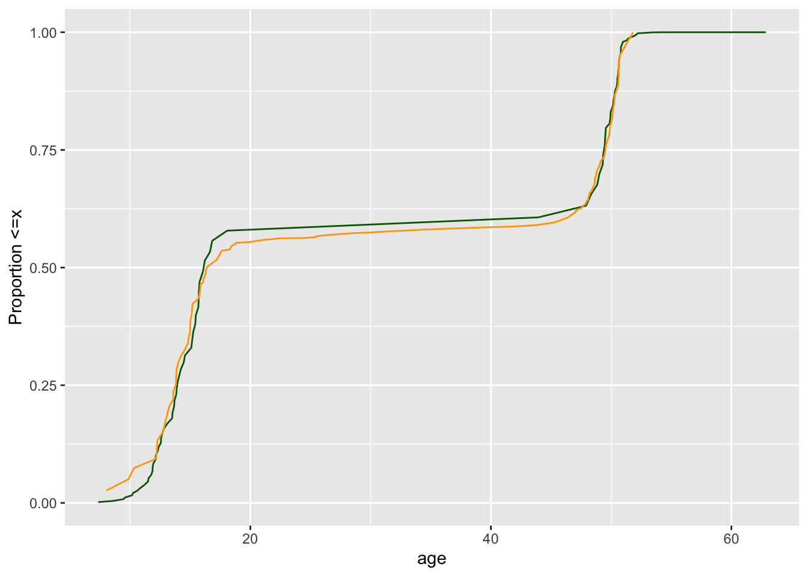

library(tidyverse)
library(smd)
library(gtsummary)
library(survey)
library(broom)
library(MatchIt)Read in the coffee_town_df.csv data frame. Describe the data (what are the columns, how many observations, how many in the exposed group, any missing data? etc.)
coffee <- read.csv("coffee_town_df.csv")plyr::count(coffee$coffee_town ==1)This data set has 1,100 observations and 5 variables, which are 3 categorical variables including whether people live in Coffee Town, whether they smoke, the difficulty of their jobs and 2 numerical variables including number of cups of coffee people drink and their age. While in this 1,100 observations, even though there is no missing data, there are only 113 observations in the exposed group.
Create an unweighted Table 1 by exposure group for these data. Describe what you see.
coffee %>%
tbl_summary(
by = coffee_town,
include = c("age",
"smoke",
"job")
) %>%
add_overall()| Characteristic | Overall, N = 1,1001 | 0, N = 9871 | 1, N = 1131 |
|---|---|---|---|
| age | 39 (34, 44) | 39 (34, 43) | 49 (14, 52) |
| smoke | |||
| current | 55 (5.0%) | 53 (5.4%) | 2 (1.8%) |
| former | 64 (5.8%) | 60 (6.1%) | 4 (3.5%) |
| never | 981 (89%) | 874 (89%) | 107 (95%) |
| job | |||
| easy | 760 (69%) | 707 (72%) | 53 (47%) |
| hard | 212 (19%) | 200 (20%) | 12 (11%) |
| none | 128 (12%) | 80 (8.1%) | 48 (42%) |
| 1 Median (IQR); n (%) | |||
This table gives us the population distribution between total, control and treatment group for each covariate we considered. From this table, we can figure out that this data is not balanced for almost all the features as the number of people for each covariate differs between control and treatment group.
Fit a propensity score model using the DAG provided. Examine the distribution of propensity scores by exposure group. What do you see?
coffee <-
glm(coffee_town ~ age + job + smoke,
data = coffee,
family = binomial()) %>%
augment(type.predict = "response",
data = coffee)
coffee %>%
select(coffee_town, .fitted)df_plot <- coffee %>%
pivot_wider(names_from = coffee_town,
values_from = .fitted,
names_prefix = "coffee_town_p")
ggplot(df_plot) +
geom_histogram(bins = 100,
aes(x = coffee_town_p1),
fill = "cornflower blue") +
geom_histogram(bins = 100,
aes(x = coffee_town_p0,
y = -stat(count)),
fill = "orange") +
scale_y_continuous("count",label = abs) +
scale_x_continuous("propensity score") +
geom_label(
label = "Live in coffee town",
x = 0.2,
y = 20
) +
geom_label(
label = "Not live in coffee town",
x = 0.2,
y = -50
)
From this mirrored histogram showing the distribution of propensity scores by exposure group, we find that population are not balanced between treatment and control group as there were more people in the control group. This corresponds to what we’ve seen in the unweighted Table 1.
Calculate an appropriate weight based on this question. Describe the causal estimand you will be estimating using this weight.
coffee <- coffee %>%
mutate(w_ato = (1 -.fitted) * coffee_town + .fitted * (1 - coffee_town))We choose to use ATO weight which estimate the effect of the treatment in the population of individuals who is possible to live in either town.
Create a weighted Table 1 using the weight in the previous exercise. Compare this to the Table 1 from Exercise 2.
svy_des <- svydesign(
ids = ~1,
data = coffee,
weights = ~ w_ato
)
svy_des %>%
tbl_svysummary(
by = coffee_town,
include = c("age",
"smoke",
"job")
) %>%
add_overall()| Characteristic | Overall, N = 1821 | 0, N = 911 | 1, N = 911 |
|---|---|---|---|
| age | 41 (20, 50) | 39 (34, 43) | 50 (14, 52) |
| smoke | |||
| current | 4 (2.1%) | 2 (2.1%) | 2 (2.1%) |
| former | 7 (4.1%) | 4 (4.1%) | 4 (4.1%) |
| never | 171 (94%) | 86 (94%) | 86 (94%) |
| job | |||
| easy | 96 (52%) | 48 (52%) | 48 (52%) |
| hard | 22 (12%) | 11 (12%) | 11 (12%) |
| none | 65 (35%) | 32 (35%) | 32 (35%) |
| 1 Median (IQR); n (%) | |||
From this table, we get our weighted population which is smaller than the whole population displayed in Table 1 from Exercise 2. By having the weighted population, our population distribution among treated and control group became balanced and they resemble to the treated group in previous table as we have less number of people in that group.
Examine the distribution of propensity score between the two groups, weighted by the weight chosen in Exercise 4. Create a plot to show this. What do you notice? Describe the plot.
df_plot <- coffee %>%
pivot_wider(names_from = coffee_town,
values_from = .fitted,
names_prefix = "coffee_town_p")
ggplot(df_plot) +
# geom_histogram(bins = 100,
# alpha = 0.5,
# aes(x = coffee_town_p1),
# fill = "cornflower blue") +
geom_histogram(bins = 100,
aes(x = coffee_town_p1,
weight = w_ato),
fill = "cornflower blue") +
# geom_histogram(bins = 100,
# alpha = 0.5,
# aes(x = coffee_town_p0,
# y = -stat(count)),
# fill = "orange") +
geom_histogram(bins = 100,
aes(x = coffee_town_p0,
weight = w_ato,
y = -stat(count)),
fill = "orange") +
scale_y_continuous("count",label = abs) +
scale_x_continuous("propensity score") +
geom_label(
label = "Live in coffee town",
x = 0.2,
y = 10
) +
geom_label(
label = "Not live in coffee town",
x = 0.2,
y = -10
)
This plot displayed the distribution of propensity score between the treatment and control group after being weighted by ATO weights. We can observe that our weighted population are more balanced between these two groups compared to the one in Exercise 4, and they were more similar to the original treatment group.
Create a Love Plot comparing the weighted and unweighted standardized mean differences. Describe what you see.
#Calculate SMDs
smds <- coffee %>%
summarize(
across(
c(job, age, smoke),
list(
unweighted = ~smd(.x, coffee_town)$estimate,
ato.weighted = ~smd(.x, coffee_town, w_ato)$estimate
)
)
)#Pivot SMDs
plot_df <- smds %>%
pivot_longer(
everything(),
values_to = "SMD",
names_to = c("variable", "Method"),
names_pattern = "(.*)_(.*)"
) %>%
arrange(desc(Method), abs(SMD)) %>%
mutate(variable = fct_inorder(variable))ggplot(
data = plot_df,
aes(x = abs(SMD), y = variable, group = Method, color = Method)) +
geom_line(orientation = "y") +
geom_point() +
geom_vline(xintercept = 0.1,
lty = 2)
From this plot, we observed that all three covariates in the propensity model get perfectly balanced on the mean after weighting as the standardized mean differences became zero.
Create unweighted and weighted eCDF plot(s) for all continuous confounders. Describe what you see.
#Unweighted eCDF
ggplot(coffee,
aes(x = age, group = coffee_town,
color = factor(coffee_town))) +
stat_ecdf() +
scale_color_manual("Live in coffee town",
values = c("orange","dark green"),
labels = c("No","Yes")
) +
ylab("Proportion <=x")
ecdf_1 <- coffee %>%
filter(coffee_town == 1) %>%
arrange(age) %>% #from small to large value
mutate(cum_pct_ato = cumsum(w_ato) / sum(w_ato))
ecdf_0 <- coffee %>%
filter(coffee_town == 0) %>%
arrange(age) %>%
mutate(cum_pct_ato = cumsum(w_ato) / sum(w_ato))
ggplot(ecdf_1, aes(x = age, y = cum_pct_ato)) +
geom_line(color = "dark green") +
geom_line(data = ecdf_0,
aes(x = age, y = cum_pct_ato),
color = "orange") +
ylab("Proportion <=x")
The only continuous confounder in this example is age. Both unweighted and weighted eCDF plots suggested that these two groups are not balanced across the whole range of values.
Based on Exercises 7 and 8, refit your propensity score model if necessary. Recreate the weighted histograms, Love Plot, and eCDF plots for your new propensity score model (iterating until you are satisfied with the result). If you don’t think you need to make any changes describe why not.
#Refit the model
coffee <- glm(coffee_town ~ job + smoke + splines::ns(age, 3),
family = binomial(),
data = coffee) %>%
augment(data = coffee, type.predict = "response") %>%
mutate(w_atoN = (1 -.fitted) * coffee_town + .fitted * (1 - coffee_town))#Weighted histogram
df_plot <- coffee %>%
pivot_wider(names_from = coffee_town,
values_from = .fitted,
names_prefix = "coffee_town_p")
ggplot(df_plot) +
geom_histogram(bins = 100,
aes(x = coffee_town_p1,
weight = w_atoN),
fill = "cornflower blue") +
geom_histogram(bins = 100,
aes(x = coffee_town_p0,
weight = w_atoN,
y = -stat(count)),
fill = "orange") +
scale_y_continuous("count",label = abs) +
scale_x_continuous("propensity score") +
geom_label(
label = "Live in coffee town",
x = 0.2,
y = 10
) +
geom_label(
label = "Not live in coffee town",
x = 0.2,
y = -10
)
#Love Plot
smds <- coffee %>%
summarize(
across(
c(job, age, smoke),
list(
unweighted = ~smd(.x, coffee_town)$estimate,
ato.weighted = ~smd(.x, coffee_town, w_atoN)$estimate
)
)
)
plot_df <- smds %>%
pivot_longer(
everything(),
values_to = "SMD",
names_to = c("variable", "Method"),
names_pattern = "(.*)_(.*)"
) %>%
arrange(desc(Method), abs(SMD)) %>%
mutate(variable = fct_inorder(variable))
ggplot(
data = plot_df,
aes(x = abs(SMD), y = variable, group = Method, color = Method)) +
geom_line(orientation = "y") +
geom_point() +
geom_vline(xintercept = 0.1,
lty = 2)#Weighted eCDF
ecdf_1 <- coffee %>%
filter(coffee_town == 1) %>%
arrange(age) %>% #from small to large value
mutate(cum_pct_ato = cumsum(w_atoN) / sum(w_atoN))
ecdf_0 <- coffee %>%
filter(coffee_town == 0) %>%
arrange(age) %>%
mutate(cum_pct_ato = cumsum(w_atoN) / sum(w_atoN))
ggplot(ecdf_1, aes(x = age, y = cum_pct_ato)) +
geom_line(color = "dark green") +
geom_line(data = ecdf_0,
aes(x = age, y = cum_pct_ato),
color = "orange") +
ylab("Proportion <=x")
Our propensity score model was updated by modeling age as a natural spine with 3 degrees of freedom and now, the weighted eCDF plot suggested that these two groups are balanced across the whole range of values.
Estimate the average causal effect using your final propensity score model and weight. Explain what this means in words.
coffee_town_df <-
glm(coffee_town ~ job + smoke + splines::ns(age, 3),
family = binomial(),
data = coffee) %>%
augment(data = coffee, type.predict = "response") %>%
mutate(ato = (1 -.fitted) * coffee_town + .fitted * (1 - coffee_town))
coffee_town_df %>%
summarise(
ato_effect = sum(cups_of_coffee * coffee_town * ato) /
sum(coffee_town * ato) -
sum(cups_of_coffee * (1 - coffee_town) * ato) /
sum((1 - coffee_town) * ato))The result suggests that for people who may be possible to live in either town, individuals living in coffee town consume 0.0068 cups of coffee less than individuals not living in coffee town.
The average causal effect in exercise 10 is a point estimate. Ultimately, we are interested in additionally quantifying the uncertainty. Describe how you might estimate the uncertainty bounds for this estimate.
library(rsample)
library(PSW)fit_ipw <- function(splits, ...) { #split is the orginal dataframe
.df <- analysis(splits) #pull out the split into new dataframe
propensity_model <- glm(
coffee_town ~ job + smoke + splines::ns(age, 3),
data = .df,
family = binomial())
.df <- propensity_model %>%
augment(type.predict = "response",data=.df) %>%
mutate(ato = (1 -.fitted) * coffee_town + .fitted * (1 - coffee_town))
lm(cups_of_coffee ~ coffee_town, data = .df, weights = ato) %>%
tidy()
}ipw_results <- bootstraps(coffee, 1000, apparent = TRUE) %>%
mutate(results = map(splits, fit_ipw))estimate <- int_t(ipw_results, results) %>%
filter(term=="coffee_town")
estimateWe applied bootstrap to estimate the probability weights instead of the frequency weights in point estimating. In this case, we extracted 1000 samples from the original data set to fit the model respectively. The 95% confidence interval was calculated using t-test and we get the interval of the coefficient of coffee_town between -0.0662 to 0.0566, which diminished the uncertainty of point estimate by deriving a interval for our estimate.